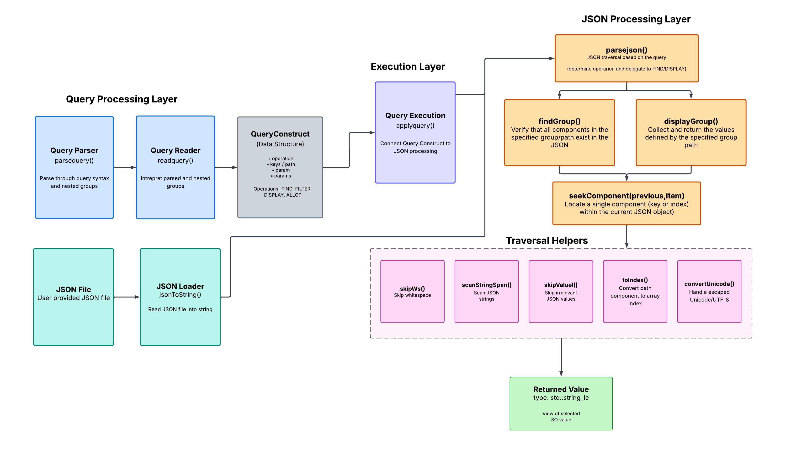
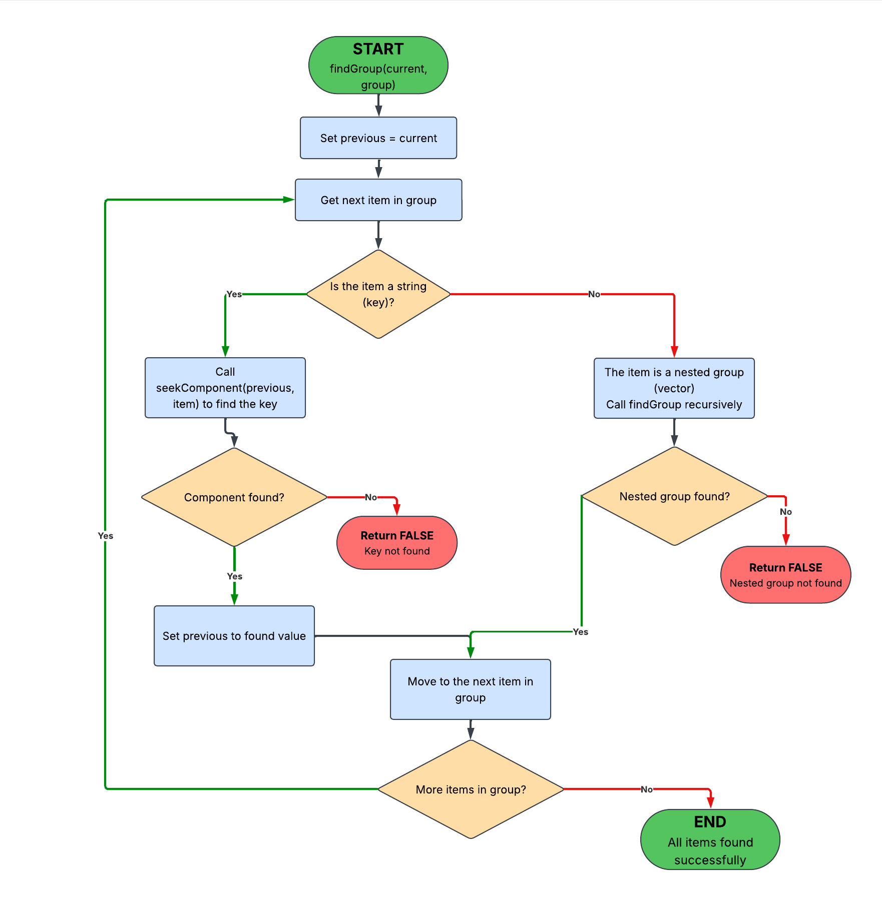

JSON Query Engine — Architecture, Design, and Algorithms
The JSON Query Engine is a C++20 project for querying structured JSON data.
The system separates query processing from
JSON processing: one side parses the user's query while
the other navigates the JSON document and performs the requested operation.
The current implementation includes recursive query parsing, a structured
ParsedQuery, integrated FIND and DISPLAY execution,
JSON component traversal, Unicode handling, GoogleTest suites,
JSON edge-case fixtures, and performance benchmarks.
Current Development Status
The main query pipeline is now connected for FIND and DISPLAY.
FILTER can already be identified during parsing, while its final execution
behavior and ALLOF remain in progress.
Implemented
- JSON file loading and validation
- Recursive query parsing with nested groups
ParsedQuery with command and FILTER metadata- Regex vs. numeric FILTER identification
FIND execution through findGroup()DISPLAY execution through displayGroup()- JSON traversal through
seekComponent()
- Value skipping and Unicode conversion helpers
- GoogleTest correctness tests and performance benchmarks
In Progress
- Final FILTER execution behavior
- ALLOF execution behavior
- Additional end-to-end command tests
- Improved error reporting and validation
System Architecture
At a high level, the engine works as a pipeline. The query parser produces
a structured query, and the JSON processing layer uses that information to
choose and execute the requested operation against the loaded JSON document.
The detailed component relationships are shown in the
System Design diagram below, which reflects the current
FIND/DISPLAY execution flow and JSON helper structure.
Current state:
FIND and DISPLAY are integrated into the current query-to-JSON execution path.
FILTER and ALLOF are the main command behaviors still being completed.
System Design
The internal design separates query processing, execution, JSON traversal,
and low-level helper functions. This makes each responsibility easier to
understand, test, and document independently.

Main Program
main.cpp loads the JSON file, accepts a user query, calls
queryparser::parsequery(), and passes the resulting
ParsedQuery into JSON execution.
Query Parser and ParsedQuery
QueryParser converts the raw query text into recursive JSONType
values. The completed result is stored in ParsedQuery, which
keeps the parsed parts, the requested command, and FILTER metadata together.
struct ParsedQuery {
std::vector<JSONType> parts;
Query command;
bool isRegexFilter = false;
};
JSON Processing
parsejson() coordinates execution based on the parsed command.
FIND delegates to findGroup(), DISPLAY delegates to
displayGroup(), and both use seekComponent()
to locate individual object keys or array indices.
Lower-level helpers such as skipWs(),
scanStringSpan(), skipValue(),
toIndex(), and convertUnicode() support the
traversal process.
Core Data Structures
JSONType
Represents recursive query syntax. Each value is either a string
token or another vector of JSONType values.
Why it matters:
nested query groups stay nested instead of being flattened.
ParsedQuery
Stores the completed query structure together with the selected
command and FILTER metadata.
Why it matters:
later execution code receives the information already discovered
during query parsing.
Algorithms
The project separates query parsing, command execution, JSON navigation,
and supporting JSON utilities into smaller algorithms. The diagrams below
document those responsibilities individually.
Flowchart notation:
blue boxes represent processing steps, orange diamonds represent decisions,
green boxes represent successful completion, and red boxes represent failed
lookups or unsuccessful returns.
1. Query Parsing Algorithm
QueryParser scans the raw query, preserves nested groups recursively,
and creates the final ParsedQuery. This stage is responsible
for turning the user's query text into the structured representation used
by later execution code.
Example
Input Query
FIND {a b {c d}}
Parsed Structure
[
"FIND",
[
"a",
"b",
["c", "d"]
]
]
2. FILTER Identification Algorithm
FILTER type is identified from the structure of the parsed query.
One argument after the path is treated as a regex FILTER, while two
arguments represent a numeric range. The result is preserved in
ParsedQuery.isRegexFilter for later execution.
FILTER Examples
Regex FILTER
FILTER {"employees" "name"} "^L"
One argument follows the path.
isRegexFilter = true
Numeric FILTER
FILTER {"employees" "salary"} 80000 100000
Two arguments follow the path.
isRegexFilter = false
3. parsejson() — Query Execution
parsejson() is the high-level JSON execution entry point.
It receives the JSON document together with the parsed query, examines
the requested command, and delegates the operation to the appropriate
command-specific logic.
Current command flow:
FIND uses findGroup(), DISPLAY uses
displayGroup(), while FILTER and ALLOF remain under development.
4. seekComponent() — JSON Traversal
seekComponent() locates one requested component from the
current JSON location. The component can be an object key or an array
index. It advances to the requested component when found and reports
failure when the lookup cannot be completed.
Traversal Example
JSON
{
"employees": [
{
"name": "Laura"
}
]
}
Requested Path
employees → 0 → name
Each call to seekComponent() locates one
component from the current JSON container.
5. findGroup() — FIND Algorithm
findGroup() verifies that all requested items in a FIND group
exist. String items are located with seekComponent(), while
nested groups are processed recursively.

How FIND Works
- String items represent components that must be found.
- Nested groups cause a recursive FIND operation.
- Any failed component lookup returns
false.
- The function succeeds only after all requested items are found.
6. displayGroup() — DISPLAY Algorithm
displayGroup() locates requested components and collects the
values that should be returned for DISPLAY. Nested groups are handled
recursively.

How DISPLAY Works
- A key may be used only to descend into a nested group.
- Otherwise, the selected JSON value is added to the results.
- Nested DISPLAY groups are processed recursively.
- A missing required component causes the operation to fail.
7. skipValue() — Value Skipping Algorithm
skipValue() advances past JSON values that are not needed
for the current lookup. This lets traversal continue without fully
materializing unrelated JSON values as C++ objects.

How Values Are Skipped
Strings
String values are skipped by moving past the complete quoted
string, including escape sequences.
Objects and Arrays
Nested structures are skipped by tracking depth until the
matching closing delimiter is reached.
Other Values
Numbers, booleans, null, and similar values are
skipped by advancing until a JSON delimiter is encountered.
8. Unicode Conversion
convertUnicode() handles escaped Unicode sequences so JSON
keys and values can be compared or returned using UTF-8 text. It supports
the string-processing behavior used by the JSON traversal layer.
Common JSON String Escapes
| Escape |
Meaning |
\" | Double quote |
\\ | Backslash |
\n | Newline |
\t | Tab |
\uXXXX | Unicode escape sequence |
Testing Strategy
The project uses GoogleTest for correctness testing and
a separate benchmark executable for timing experiments.
Parameterized tests are used when several inputs should satisfy the same
behavior, while additional integration coverage can be added as FILTER
and ALLOF execution are completed.
| Area |
What is verified |
Why it matters |
| File handling |
Open files, missing files, and JSON-to-string conversion. |
Confirms the parser starts from a reliable input source. |
| JSON traversal |
Object keys, array indices, nested structures, and missing components. |
Exercises the main JSON navigation behavior. |
| Escapes & Unicode |
Escaped keys, UTF-8 text, Unicode escapes, and surrogate-related cases. |
Checks string comparison across JSON encodings. |
| Literal & edge values |
null, booleans, numbers, empty arrays, and empty objects. |
Protects against failures outside simple JSON structures. |
| Query parsing |
Simple, nested, quoted, malformed, and whitespace-heavy queries. |
Verifies recursive query construction and parser state management. |
Performance Benchmarks
benchmark.cpp remains separate from the correctness suite.
It measures lookup behavior across smaller and larger JSON documents,
including different key positions, deep paths, arrays, escaped content,
and missing values.
Sample and Stress-Test Data
The repository includes several groups of JSON fixtures:
jsonFiles/basic/ — employee, product, and university examplesjsonFiles/edgecases/ — literal values and empty structuresjsonFiles/unicode/ — unusual keys, escaped text, and Unicode cases- Booking datasets — smaller and larger benchmark inputs
big.json — broader traversal and performance stress cases
Remaining Work
-
Complete FILTER execution.
Connect the parsed FILTER metadata to the final filtering behavior.
-
Complete ALLOF execution.
Implement and test the remaining ALLOF command behavior.
-
Add more integration tests.
Test complete query flows from raw text through returned JSON results.
-
Improve diagnostics.
Produce clearer errors for malformed queries, invalid paths,
invalid indices, and malformed JSON.
-
Expand performance testing.
Continue comparing behavior across different JSON document sizes
and query locations.